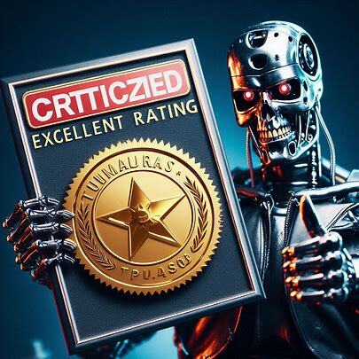
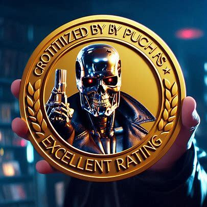
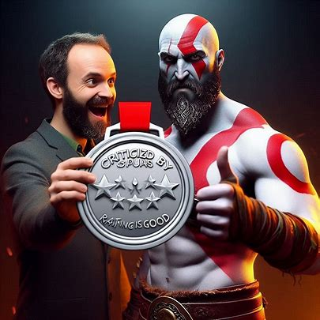
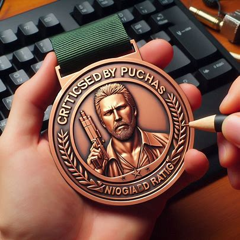

Link: Metacritic.com
Link: Steam Store
RAZONES:
Historia y Personajes: La narrativa de Far Cry 3 ha sido elogiada por su profundidad y emoción. En particular, el antagonista Vaas Montenegro, interpretado por Michael Mando, es considerado uno de los villanos más memorables y carismáticos en la historia de los videojuegos.
Jugabilidad: El juego ofrece una combinación de exploración en mundo abierto, combate dinámico y elementos de supervivencia. La isla donde se desarrolla el juego es vasta y llena de actividades, proporcionando muchas horas de entretenimiento. Los sistemas de progresión y personalización de habilidades y armas permiten a los jugadores adaptar su experiencia a su estilo de juego.
Gráficos y Diseño de Mundo: Far Cry 3 ha sido aclamado por sus impresionantes gráficos y su detallado diseño de mundo. La isla tropical se presenta de manera vibrante y llena de vida, con una variedad de paisajes y entornos que los jugadores pueden explorar.
Experiencia Inmersiva: La atmósfera del juego y la atención al detalle en la creación del entorno contribuyen a una experiencia inmersiva. Los críticos han destacado cómo el juego mantiene a los jugadores comprometidos y sumergidos en su mundo.
Link: Metacritic.com
Link: Steam Store
RAZONES:
Jugabilidad: La jugabilidad de Devil May Cry 5 ha sido ampliamente elogiada. Los críticos han destacado su combate fluido, rápido y lleno de acción, que combina de manera efectiva los movimientos elegantes y las habilidades especiales de los personajes. La introducción de tres personajes jugables (Dante, Nero y V) cada uno con su propio estilo de combate, ha sido muy bien recibida. Esto añade variedad y profundidad al juego, ofreciendo diferentes experiencias de juego.
Gráficos y Diseño Visual: El juego utiliza el motor RE Engine, el cual proporciona gráficos impresionantes y un alto nivel de detalle. Los críticos han alabado tanto los entornos visualmente atractivos como el diseño de personajes. Las animaciones y los efectos visuales durante los combates también han sido destacados como algunos de los mejores en la serie y en el género.
Historia y Narrativa: La narrativa de Devil May Cry 5 ha recibido elogios por su desarrollo y por cómo conecta con las entregas anteriores de la serie. La historia es intrigante y presenta giros interesantes, manteniendo a los jugadores involucrados. Los personajes principales tienen historias y motivaciones bien desarrolladas, y los diálogos han sido reconocidos por su calidad y humor característico de la serie.
Música y Sonido: La banda sonora del juego, que combina rock y música electrónica, ha sido muy bien recibida. Los críticos han destacado cómo la música se adapta al ritmo del combate, mejorando la experiencia de juego. Los efectos de sonido y la actuación de voz también han recibido elogios, contribuyendo a la inmersión y el impacto emocional del juego.
Link: Metacritic.com
Link: Steam Store
RAZONES:
Historia y Personajes: La narrativa de Far Cry 6 se centra en una revolución en la isla ficticia de Yara, inspirada en Cuba, contra el dictador Antón Castillo, interpretado por Giancarlo Esposito. La actuación de Esposito ha sido altamente elogiada, y su personaje es considerado uno de los puntos fuertes del juego. El protagonista, Dani Rojas, puede ser jugado como hombre o mujer, y su desarrollo como personaje también ha recibido comentarios positivos.
Jugabilidad: Far Cry 6 mantiene la fórmula clásica de la serie, ofreciendo un mundo abierto lleno de actividades, combates intensos y un sistema de progresión basado en la personalización de armas y habilidades. La inclusión de nuevos elementos, como el sistema "Resolver" para crear armas y herramientas improvisadas, ha sido bien recibida. Los críticos también han disfrutado de la variedad de vehículos y animales compañeros que los jugadores pueden utilizar.
Gráficos y Diseño de Mundo: El diseño del mundo y los gráficos han sido ampliamente elogiados. Yara se presenta como una isla vibrante y detallada, con una gran variedad de paisajes y ambientes que los jugadores pueden explorar. Los críticos han señalado que el diseño de la isla y la atención al detalle en los entornos contribuyen a una experiencia inmersiva.
Diversión y Repetición: Algunos críticos han mencionado que, aunque el juego es divertido y ofrece muchas horas de entretenimiento, puede sentirse repetitivo en ciertos puntos. Las misiones y actividades secundarias a veces caen en patrones predecibles. Sin embargo, la libertad de abordar los objetivos de diferentes maneras y la posibilidad de explorar libremente mantiene el interés de muchos jugadores.
Link: Metacritic.com
Link: Steam Store
RAZONES:
Historia y Personajes: La trama de Sonic Forces sigue a Sonic y sus amigos en una lucha contra el Dr. Eggman, que ha conquistado gran parte del mundo con la ayuda de un nuevo villano llamado Infinite. La historia ha sido considerada simplista y no tan atractiva, aunque algunos críticos han apreciado los intentos de añadir un tono más oscuro y serio a la narrativa.
Jugabilidad: Sonic Forces mezcla varios estilos de juego: fases en 2D con Sonic clásico, fases en 3D con Sonic moderno, y fases con un personaje personalizable que el jugador puede crear. La jugabilidad ha sido criticada por su inconsistencia y falta de profundidad. Algunos críticos mencionan que las fases en 3D son rápidas pero a menudo demasiado automatizadas, mientras que las fases en 2D no alcanzan la calidad de los títulos clásicos de Sonic.
Gráficos y Diseño de Niveles: Los gráficos de Sonic Forces han recibido comentarios positivos por ser coloridos y detallados, especialmente en comparación con entregas anteriores de la serie. Sin embargo, el diseño de niveles ha sido un punto de crítica. Algunos críticos consideran que los niveles son demasiado cortos y lineales, careciendo de la exploración y desafío que se espera en un juego de Sonic.
Personaje Personalizable: Una de las novedades de Sonic Forces es la inclusión de un personaje personalizable (Avatar) que los jugadores pueden crear y equipar con diferentes gadgets. Esta característica ha sido bien recibida en términos de personalización, pero el gameplay asociado al Avatar ha sido criticado por no ser tan pulido o divertido como las secciones con Sonic.
Música y Sonido: La banda sonora del juego ha sido generalmente bien recibida, con una mezcla de temas nuevos y clásicos que capturan la esencia de Sonic. Los efectos de sonido y las actuaciones de voz han recibido críticas mixtas, con algunos elogios por la calidad de la producción, pero también comentarios sobre la falta de impacto emocional.